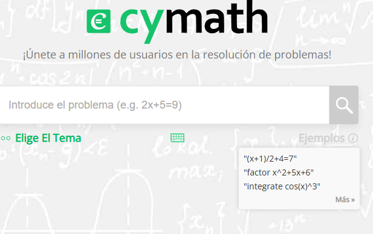
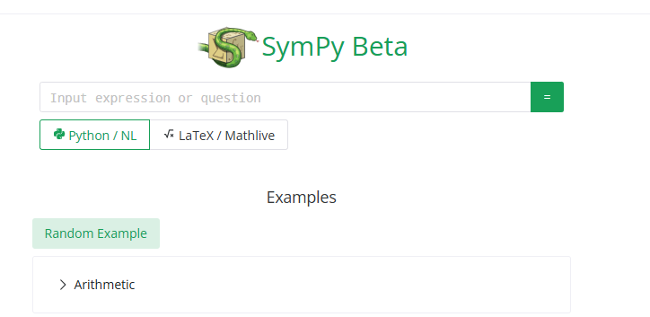
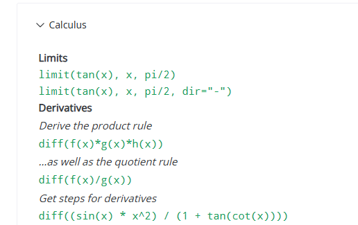
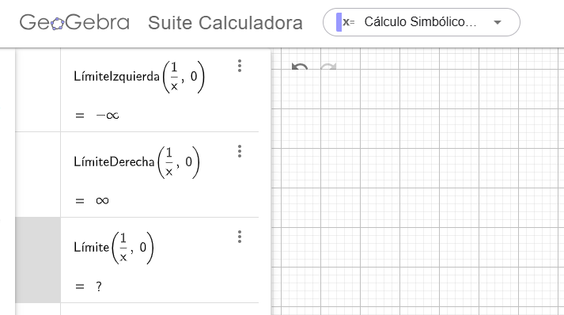
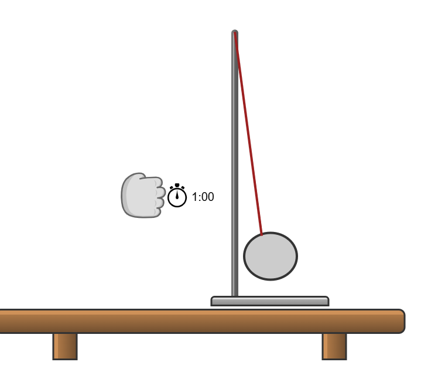
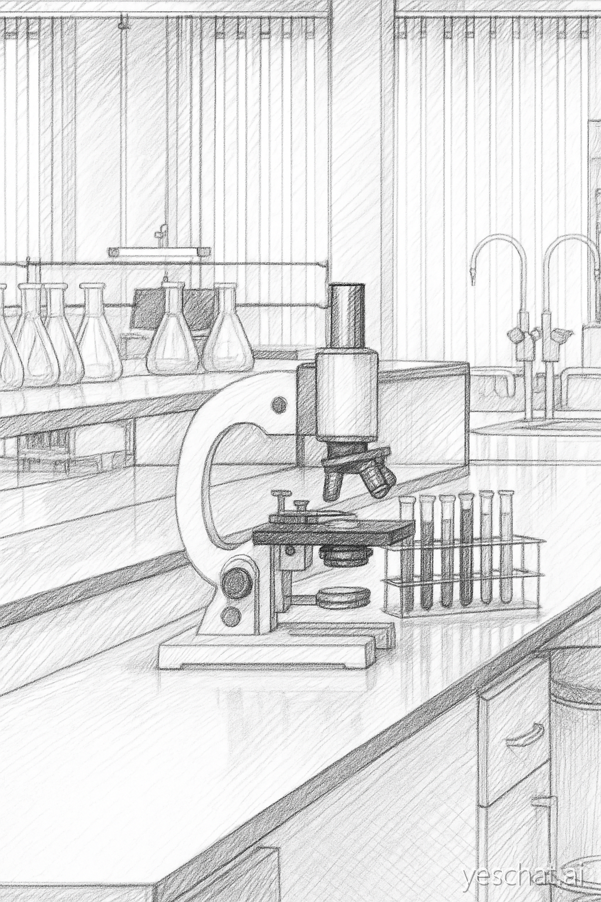

Otras Herramientas
Software Complementario
En esta clase vamos a mostrar el funcionamiento de algunas herramientas que pueden ser de ayuda en la cursada de otras asignaturas.
Matemáticas: Solvers y paso a paso
Ofrecen resoluciones para operaciones matemáticas y en algunos casos el paso a paso de las mismas.
Cymath
Es la más elemental de todas, pero ofrece lo básico: derivadas, integrales, factorziaciones, etc.
Como extra, tiene resúmenes de los conceptos mas usuales en la sección referencia
La interfaz es bastante sencilla y la curva de aprendizaje, rápida. Las ayudas integradas durante la ejecución lo hacen bastante intuitivo.

Ofrece soluciones paso a paso con un nivel de automatización evidente pero efectivo para los casos mas usuales.
Sitaxis: Podremos escribir Latex. Lo ingresado se muestra en pantalla antes de que lo ejecutemos, lo que es útil para saber que hayamos escrito la expresión correctamente. En algunas operaciones, como integrales o gráficas, suele completar automáticamente algunas partes de la expresión.
Se accede desde acá
Wolfram Alpha
Es uno de los más poderosos, ofrece una amplia gama de conceptos y contenidos de todas las ramas de la ciencia (y conocimiento en general) bastante confiable.
Como lado negativo, es que su potencia real se ve solo cuando se paga. La versión libre tiene serias limitaciones por lo que sólo vale la pena cuando no haya otra alternativa.
Sitaxis: Se puede escribrir en lenguaje natural “derive sin(x)” o con látex.
Se accede desde acá
Symy Gamma y Sympy Beta
Ambos estan basados en la librería Sympy de python para cálculo simbólico. Permite resolver problemas de matemática tal como lo haríamos con lápiz y papel.
Sympy Gamma es una puesta en línea de este paquete de python de sus mismos creadores a la que se accede desde acá.

Sympy Beta no pertenece a los creadores de Sympy pero ofrece un funcionamiento similar y se accede desde acá. Tiene una breve ayuda para los usos mas comunes que puede ser de ayuda a principiantes
Sintaxis: Se puede usar la sintaxis de Python, lo que es aconsejable si uno está queriendo familiarizarse con ello o latex/Mathlive.

En la página de inicio se pueden ver ejemplos para guiarse. Aunque como se trata de una versión “en vivo” de sympy, todo lo que sympy pueda hacer estará disponible. Si quieren darle una mirada, la ayuda de Sympy, está acá y una breve ayuda se puede consultar acá
Symbolab
Simlar a Cymath, ofrece soluciones paso a paso con más opciones, aunque con menos robustez que Wolfram Alpha. También muestra una fuerte “barrera de pago” en donde las mejores prestaciones sólo se dan luego de una suscripción. Útil para los cálculos más sencillos o para corroborar respuestas.
Se accede desde acá y tiene una extension para navegadores basados en Chromium.
GauthMath
Al igual que Symbolab, Wolfram alpha y en menor medida CyMath hacen uso de los modelos de lenguaje de IA para mejorar sus respuestas.
Resulta potente para resolver desde una fotografía (existe una app) aunque la web suele tener fallos al pedirle resoluciones desde el teclado.
Se accede desde acá
Calculadoras Gráficas, Ilustraciones y esquemas
Desmos
Ya sea para graficar funciones, para resovler una integral definida o graficar una derivada, Desmos es una herramienta muy intuitiva y ágil. Sólo con interactuar un poco con la interfaz (también tiene su versión app moóvil) o dándole una leída a su ayuda en español podemos empezar a usarlo. Personalmente lo presento como el primo ágil (aunque menos abarcador) de Geogebra.
Se accede desde acá
Geogebra
Con varios años funcionando, no necesita presentación. Ha ido incrementando su poder y posibilidades con el tiempo, lo que también lo ha hecho ganar complejidad, haciéndolo un poco menos rápido que otras opciones similares.
En geogebra se puede hacer mucho, realmente mucho:calculadora elemental, graficadora, planilla de cálculos,geometría, cálculo simbólico, etc. asi que nos limitaremos mencionarlo.
Se accede acá y cuenta con versiones de app móvil.
Usar geogebra/desmos junto a otras herramientas mientras se estudia es siempre aconsejable.

Nota: Cuando estemos usando el CAS (calculadora simbólica) si comenzamos a tipear aquello que deseamos que se haga, por ejemplo “deriv..” o “limit..” la interfaz nos ofrece ayuda de sintaxis y posibles comandos que suelen hacer de su uso muy fácil.
Esquemas, ilustraciones y otros
Para informes de laboratorio, trabajos prácticos o de final muchas veces el estudiante debe confeccionar esquemas o ilustraciones. Hacerlo a mano no sólo es complejo sino que no todo el mundo tiene la habilidad para presentar algo decente. Las siguientes herramientas nos dan una mano para ello.
Chemix
Es un software de pago que en su versión gratuita es “usable” para varias situaciones, en particular para representar diseños experimentales y los materiales involucrados. Contiene una base de datos de imágenes (cliparts) o plantillas de elementos usuales: mesas,probetas, balanzas, componentes eléctricos y aparatos de medición listos para usar en nuestros diseños. Algunos elementos muy usuales, como las pinzas cocodirlo, sólo están disponibles en la versión de pago.
Ejemplos de como se ven sus diseños

Se accede acá
Alternativas a Chemix
Si bien no hay otro software que tenga las mismas prestaciones específicas existen hoy numerosas alternativas para crear esquemas a partir de piezas prediseñadas, donde podremos buscar o crear las nuestras según sea necesario.
Algunas de estas herramientas son:
Una forma de acelerar la creación de esquemas de laboratorio es tener un repositorio de imágenes de elementos comunes. Los pueden crear buscando imágenes en algún sitio de banco de imágenes o a partir de los elementos del laboratorio. Para los más artísticos, pueden usar alguna herramienta de IA para hacer un boceto a partir de una fotografía y así obtener una presentación agradable desde un registro de laboratorio.

Gráficas y ajuste de curvas
Existe software dedicado que permite la elaboración de gráficas a partir de datos experimentales tabulados (ya sea formato planilla de calculo o texto plano) que presentan un escenario intermedio entre usar el software de planilla de cálculo y herramientas de programacion como python, r, u otros lenguajes que también tienen su propio aresenal de herramientas para tratamiento de datos científicos.
Ambos ejemplos son opciones de código abierto y con una buena comunidad que los utiliza lo que los vuelve atractivos en ámbitos educativos y científicos en general.
Mención Honorífica: MathCha
Un poco inclasificable, ya que hace un poco de todo, MathCha es un editor de ecuaciones, procesador de texto, graficador y herramienta de diseño de diagramas todo en uno.
Como toda navaja suiza, no tiene los elementos más potentes en cada caso, pero al contar con muy buena integración con latex y gráficos vectoriales es una excelente herramienta intermedia para tipear ecuaciones difíciles, graficar funciones y exportar sin pérdida de calidad, MathCha es digno de ser tenido en cuenta para resolvernos la elaboración de informes y material escrito.
Interacción: si tipeamos “" accedemos a una ayuda para autocompletar que no ofrece un gran abanico de elementos de tablas, gráficas, matemáticas, etc.
El apartado de gráficos y diagramas es bastante bueno y nos permite exportar a svg, lo que es útil si deseamos no perder calidad de imagen al cambiar de tamaño. Los componentes para diagramas son los elementales y con un poco de ingenio se puede reproducir cualquier forma uniendo las existentes.
Se accede desde acá
LLM’s como herramienta
No podemos dejar de mencionar los modelos predictivos de lenguaje de ia, conocidos llanamiente como “chatbots de ia” o simplmente (de manera errónea) “ia”. La primera aclaración que debemos hacer es que lo que vulgarmente se llama “ia” es en realidad una rama grande de investigación científica con años de desarrollo, y los llm’s (o modelos garndes de lenguaje) son solo una parte de dicho ámbito cientifico, no dedicadas a operar sobre ningún área de la ciencia en particular, cuya función es la predicción estadística de texto. Las puertas de entrada que conocemos (claude, chatgpt, kimi, qwen,gemini,deepseek) son implementaciones principalmente pensadas con fines comerciales (y por qué no geopolíticos), y a diferencia de por ejemplo alpha-fold, cuyo entrenamiento especializado permitió decodificar la estructura molecular de cientos de miles de proteínas, sólo se limitan a “predecir” cuál podría ser la próxima palabra en un contexto determinado, y si bien los llm’s comparten algunos principios básicos con los modelos entrenados para tareas específicas, sus funcionalidades son muy diferentes. Nunca debemos olvidar que los llm’s están creados sólo para producir texto coherente.
Los llm’s pueden resultar atractivos, pero su uso debe hacerse con criterio debido que su propia naturaleza (como les conté más arriba) los vuelven propnensos a errores en lo relativo a desarrollos matemáticos complejos, y si bien parecen responder fielmente en situaciones sencillas, para el estudio de cualquier asignatura de una carrera de grado, existe bibliografía que tendrá la información mejor presentada y de manera más dedicada que los llm’s. Sin embargo, usarlos para cotejar diferentes fuentes, pedirle que nos resuma los diferente enfoques vigentes sobre algún tema, o que parafrasee, resuma o amplíe una explicación, pueden ser casos válidos de uso. Para realizar una operación matemática sencilla, aunque seguramente den la respuesta correcta, tenemos otras opciones. Si les interesa conocer un poco sobre en flujo de trabajo posible donde se integra un llm como herramienta real en la investigación, pueden leer este artículo y su fundamentación en este otro
Actividades
Solvers
Con los diferentes solvers (también pueden probar con el CAS de Geogebra) resolver
- \(\int \tan(x^2)dx\)
- \(\int \frac{1}{x}dx\)
- \(\int_0^4 e^{-x^2}dx\)
- \(\lim_{x\to \infty}\left(x \cdot \sin x \right)\)
- \(\frac{df}{dx} \left( \ln(x) \right)\)
- Factorizar: \(x^3+x-2\)
- Factorizar: \(x^2+1\)
Diagramas
Usar alguna de las herramientas mostradas para crear un diagrama de laboratorio (de un TP actual o que ya esté hecho).
Referencias
Uso de sympy (elemental) Tutorial de sympy de geeks for geeks